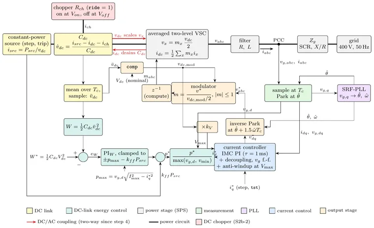
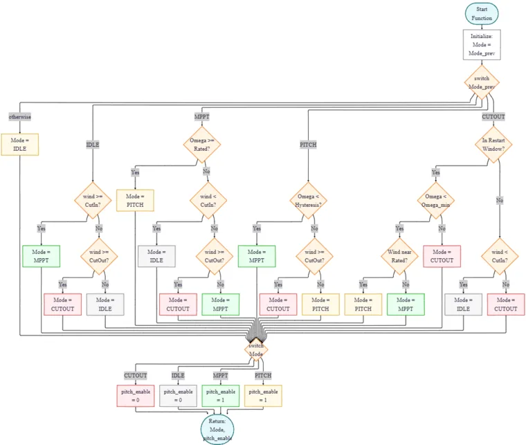

Control and power electronics engineer
Caleb Kyei
I like to build things to make life easier. I spent 4.5 years at Signify R&D, the last two as an electronics development engineer, and built a digital PID design tool for high-power PFC that cut design time from a week to minutes. Now I am on the Erasmus Mundus DREAM triple master's in Nantes, Berlin and Barcelona, focused on converter and grid control.
Open to a 6-month master's thesis, 1 February – 31 July 2027, in industry or at a research institute.
calebkyei.github.io · github.com/CalebKyei
- Now
- DREAM triple master's: Nantes, Berlin, Barcelona
- Before
- 4.5 years at Signify R&D, Eindhoven
- Focus
- Converter and grid control, model predictive control
- Based in
- Barcelona
Interactive
Sinusoidal PWM, live
- fsw
- 750 Hz
- V1 out
- –
- THD out
- –
- time
- 4 ms/div
Overmodulation: low-order harmonics appear
Selected work
Five projects from the master's. Each has its own page: my part, what came out of it, and what I took from it.
-

Grid-connected converter control
A two-level grid-following converter, built and verified block by block: SRF-PLL, decoupled d-q current control, DC link and weak-grid behaviour. Grid-forming control comes next.
View project → -
EV powertrain: MPC speed controller
My part of a team model of a 1.55 MW electric vehicle drive: a state-space model predictive speed controller, tested in three drive modes.
View project → -

Active harmonic filter on a 400 V bench
A team lab with a commercial active filter in front of a rectifier drive. We measured the grid current fall from 16.9 to 4.3 A and cos φ rise from 0.24 to 0.95; my part was the analysis of that operating point against the baseline.
View project → -
Day-ahead solar forecasting
A Python day-ahead solar forecast for the 50Hertz area, built from public data: 2nd of 16 entries on RMSE, behind only the TSO baseline.
View project → -

2 MW DFIG wind turbine: supervisory control
My part of a group wind-turbine model: a state machine that moves the turbine between idle, maximum-power tracking, pitch-limited rated power and storm cut-out.
View project →
Digital PID design tool for high-power PFC
Experience
Signify, formerly Philips Lighting
Electronics Development Engineer
Aug 2023 – Aug 2025
- Developed switch-mode LED drivers for luminaire builders, including soft-switching power stages and isolated flyback auxiliary supplies; horticulture lighting among the applications.
- Worked across embedded hardware and software, and driver communication interfaces such as Modbus.
Graduation Intern, Digital Control
Feb 2023 – Jul 2023
- Built a MATLAB/Simulink, Python and Excel design tool for a digital PID controller in high-power PFC, automating parameter generation, optimisation and verification. Design time went from a week to minutes.
Power Electronics Intern
Feb 2022 – Jan 2023
- Investigated SiC MOSFET power stages for outdoor LED drivers, and embedded buck-stage switching control.
Test Automation Intern
Feb 2021 – Jan 2022
- Automated embedded testing of emergency LED drivers in R&D.
Robotics Team Pi (FRC)
Software Designer, then Mentor
Sep 2020 – Aug 2022
- Wrote C++ autonomous aim-assist and swerve/differential drive control; later led the team's software mentoring.
Education
Erasmus Mundus Joint Master DREAM
Semesters 3 & 4 · Sep 2026 – Aug 2027
Universitat Politècnica de Catalunya
MSc Energy Engineering
Grid-forming control, renewable grid integration, power quality, AI and data science.
- Coursework in progress: Renewable Grid Integration (grid-forming, grid codes, HVDC, microgrids), Power Quality, AI in Energy Systems (MLP, LSTM, CNN), Data Science for Energy Systems.
- Master's thesis, 6 months: 1 February – 31 July 2027.
Semester 2 · Mar 2026 – Aug 2026
HTW Berlin
MSc Electrical Engineering
Electric vehicle drives, grid control, power electronics, wind and PV engineering.
- Team project: a 10 kVA grid-following inverter in Simulink, with SRF-PLL, decoupled d-q current control, SPWM and LCL filter design.
- Team lab: operated and measured a commercial active harmonic filter on a 400 V test bench; my part of the report was the analysis of the main operating point.
Semester 1 · Sep 2025 – Feb 2026
École Centrale de Nantes
MSc Control and Robotics
Advanced control architectures and power system dynamics.
- Robust and optimal control (SMC, LQR), Kalman filtering and system identification.
- MILP/KKT scheduling optimisation; power-system stability and inertia modelled with DAEs.
Fontys University of Applied Sciences
BSc Electrical and Electronics Engineering, cum laude. Thesis: Digital Control in Power Systems. PROUD Honours Programme. Minor in Performance Coaching and Training.
Skills
- Control
- Model predictive control, LQR, sliding-mode control, supervisory control (FSM), Kalman filtering, system identification, model-based design
- Power
- Power electronics and inverters, EV powertrains and FOC drives, power system stability, renewable energy systems
- Software
- MATLAB, Simulink, Stateflow, LTspice, Python (PyTorch, scikit-learn, pvlib), reinforcement learning, C, C++, Docker, GitLab CI/CD, Git
- Interests
- Converter and inverter control; MMC and grid-forming control; model predictive and optimal control; EV powertrains and FOC drives; power system stability; ML forecasting for energy systems
- Languages
- English native/bilingual, Dutch B1, French A2+, German A1.2
- Certifications
- Advanced Modeling and Simulation of Power Electronic Systems using PLECS (Plexim, 2023); Agile with Atlassian Jira; Performance Coach
- Honours
- Top Talent Scholarship, Fontys (4×), for academic excellence; ECHO mentorship programme (Google mentor)
Public code
Let's talk.
If your team works on converter or grid control and could host a master's thesis from February 2027, I would like to hear from you.